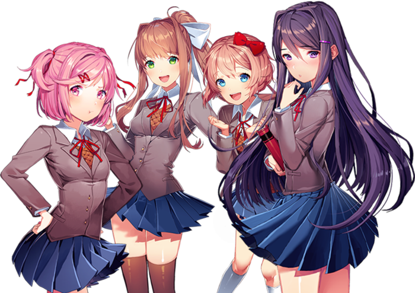

Doki Doki Literature Club! é um jogo eletrônico de visual novel desenvolvida pela Team Salvato. Foi lançado em 22 de setembro de 2017 para Microsoft Windows, macOS, e Linux, e mais tarde em 6 de outubro para a Steam. A história segue um aluno do ensino médio que se junta ao Clube de Literatura da escola e interage com quatro garotas. O jogo apresenta uma história principalmente linear, com algumas cenas e finais alternativos dependendo das escolhas que o jogador faz. O jogo começa com você conhecendo Sayori, uma garota que você conhece como uma amiga de longa data
